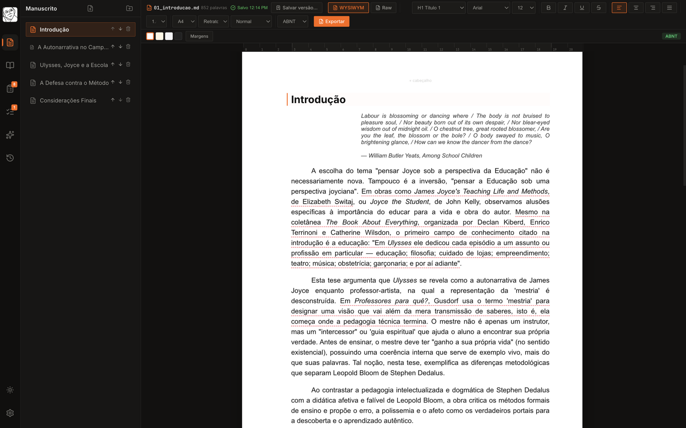
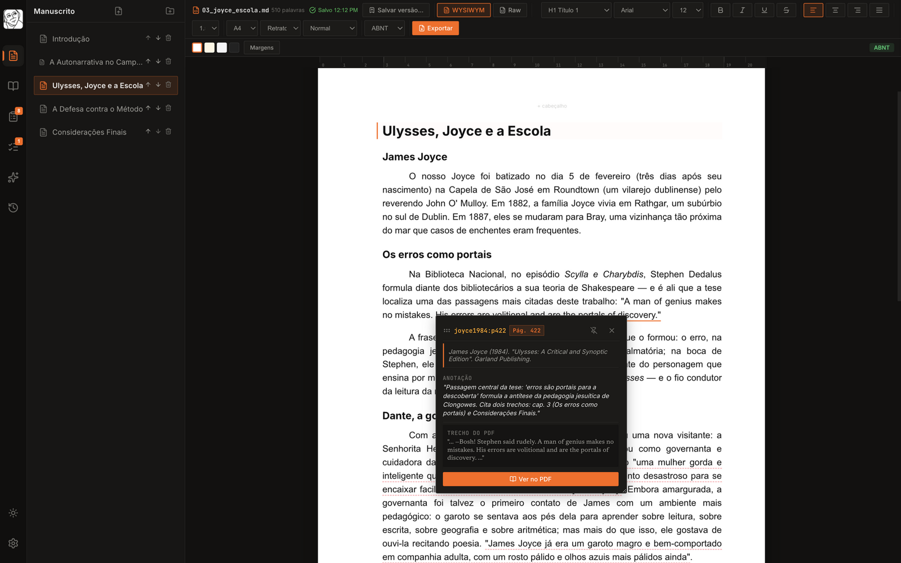
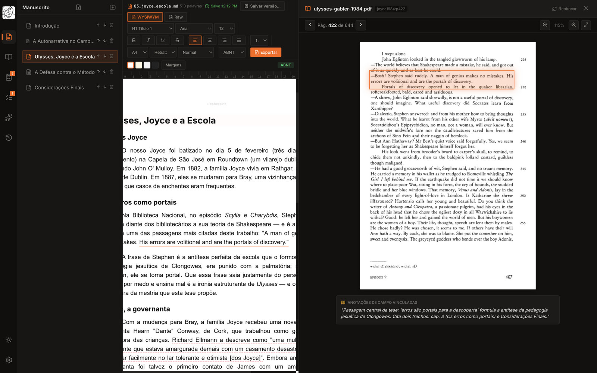
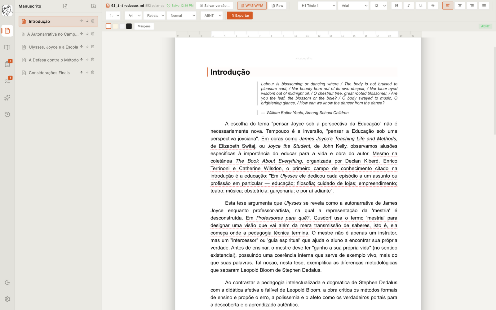

EDITOR ACADÊMICO · DESKTOP · LOCAL-FIRST
Da página do PDF à citação formatada. Sem sair do editor.
No Blake, você lê a fonte, escreve o manuscrito e compila a bibliografia em ABNT, Chicago ou MLA — em uma só janela. Cada citação guarda a página exata do PDF de onde veio. Seus arquivos continuam seus: Markdown puro, no seu computador.
Core gratuito para sempre · Windows, macOS e Linux · sem nuvem obrigatória

ESTUDO DE CASO REAL Toda a demonstração deste site usa uma tese publicada: A narrativa autobiográfica de James Joyce professor e James Joyce autor: representações da mestria em Ulysses, de Victor Fermino da Silva (FEUSP / USP). Leia a tese na Biblioteca Digital USP ↗
Veja o fluxo em 15 segundos
Abre o capítulo, passa o mouse na citação ancorada e o Blake pula para a página exata da edição crítica de Ulysses — com o trecho destacado e a anotação de campo ao lado.


Menos abas. Mais pesquisa.
Cada recurso existe para encurtar o caminho entre ler, citar e escrever — e para que o manuscrito chegue pronto à submissão.
Citações ancoradas no PDF
Destaque um trecho no PDF e cite-o no texto: a citação guarda autor, obra e a página exata. Nunca mais pergunte onde você leu aquilo — e nunca mais digite a página errada.
ABNT nativa
NBR 6023 e 10520 como norma de compilação, não template de upload. Chicago Author-Date e MLA também saem prontos.
Bibliografia que se compila sozinha
Cite enquanto escreve e a seção de referências se monta, ordena e formata sozinha, no padrão da revista.
Seus arquivos são seus
Manuscrito em Markdown legível para sempre, PDFs e anotações no seu computador. Nada vai para a nuvem, não há conta obrigatória e o projeto abre em qualquer editor daqui a dez anos.
Time Machine
Cada versão do capítulo fica guardada com diff linha a linha. Compare com o mês passado e reverta quando quiser — a reversão também vira revisão.
Do .docx e Zotero para dentro
Importe manuscritos .docx e acompanhe sua biblioteca BibTeX do Zotero ou Mendeley: o Blake observa a pasta e atualiza as referências em tempo real.
Um revisor embutido
Voz passiva em série, parágrafo de 200 palavras, citação sem entrada na biblioteca: o Blake aponta o que um bom orientador apontaria. A decisão final é sua.
Exportação pronta para submissão
DOCX com margens e espaçamento de banca, LaTeX/Typst para periódicos, HTML autossuficiente para preprint. A mesma fonte, quatro destinos.
Um ambiente, não quatro abas
Escrever no Word, gerenciar referências no Zotero, anotar no Obsidian, formatar no Overleaf. No Blake, esse fluxo inteiro cabe em uma janela.
| Blake | Word + Zotero | Obsidian | Overleaf | |
|---|---|---|---|---|
| Escrever o manuscrito | ● | ◐ | ◐ | ◐ |
| Gerenciar referências | ● | ◐ | ○ | ● |
| Ler e anotar os PDFs | ● | ○ | ◐ | ○ |
| Citações ancoradas na página do PDF | ● | ○ | ○ | ○ |
| Bibliografia ABNT compilada | ● | ◐ | ○ | ○ |
| Trabalhar sem nuvem, com arquivos abertos | ● | ● | ● | ○ |
● nativo · ◐ parcial/via plugins · ○ ausente
Preço honesto, software completo
O Core é o software inteiro, grátis para sempre — é um compromisso, não promoção. Você só paga por serviços contínuos que têm custo contínuo.
CORE
Grátis para sempre
Todo o software, 100% local.
- Projetos e capítulos ilimitados
- Citações ancoradas no PDF
- Bibliografia ABNT, Chicago e MLA
- Time Machine com histórico completo
- Importação .docx e BibTeX (Zotero/Mendeley)
- Exportação DOCX, LaTeX, Typst e HTML
- Sem conta, sem nuvem, sem pegadinha
PRO
R$ 49 /mês
ou R$ 490/ano · em breve
- Revisão assistida por IA, opt-in por projeto, com anonimização automática
- Correções sempre via diff revisável — nunca automáticas
- Sincronização gerenciada entre seus dispositivos
- Suporte prioritário
- Offline continua 100% funcional: o que pausa é IA e sync — o app nunca trava
ENTERPRISE
Cotação
Universidades, programas de pós e portais de periódicos.
- Referências públicas: ~R$ 490/assento/ano (5–19 assentos: R$ 390 · 20+: R$ 290)
- Campus ou portal OJS inteiro: R$ 8–30 mil/ano
- Normas da instituição ou da revista indexadas na busca
- Templates, presets e integração com o fluxo editorial
- DPA, SLA e ativação offline assinada para laboratórios
COMPROMISSO: o Core nunca passa a ser cobrado · autores de revistas parceiras têm 30% no Pro · licença vitalícia não: receita vem de serviço contínuo, como no modelo Zotero
PARA UNIVERSIDADES E PPGs
Sua pós forma pesquisadores, não formatadores
Alunos de mestrado e doutorado perdem meses com normalização. O piloto do Blake entra pela porta pequena — um programa, uma biblioteca — e mede o que importa.
- Piloto gratuito de 1 semestre para docentes e discentes de um PPG
- Oficina “Do PDF ao artigo formatado” (1h30) — material didático pronto para bibliotecas
- Métrica combinada: tempo entre qualificação e submissão, antes e depois
- Privacidade que passa em comitê: nada sai do computador, sem nuvem obrigatória

PARA REVISTAS CIENTÍFICAS
Autores que chegam prontos para a triagem
Uma fração dos manuscritos volta para ajustes de normalização e referências quebradas — trabalho voluntário demais para isso. O Programa Revista Parceira ataca isso sem custo para a revista.
Selo “Prepare seu manuscrito com Blake”
Na página de Normas para Autores da revista, com cupom rastreável de 30% para os autores. Sem custo, sem exclusividade.
Template Blake da sua revista
Suas normas viram um preset de compilação: os autores exportam “pronto para submissão na Revista X” — nas normas de vocês, não nas genéricas.
Verificação de conformidade na submissão
Referências órfãs, citações sem página, campos faltantes: checagem automática contra as normas da revista no ato do envio — para editoras e portais OJS com grandes portfólios.
Uma pesquisa leva anos. Suas ferramentas não podem virar obstáculo. No Blake, cada anotação e cada capítulo vivem em arquivos abertos que continuam seus — amanhã, depois da defesa e daqui a dez anos.
Baixe, instale e comece a escrever
Instaladores para as três plataformas, atualização automática dentro do app e o projeto inteiro no seu computador. Sem conta, sem nuvem obrigatória.
MACOS · INTEL E APPLE SILICON
Blake.IDE_<versão>_universal.dmg
- Abra o .dmg e arraste o Blake para a pasta Aplicativos.
- Na primeira abertura, se o macOS disser que não pôde verificar o app: Ajustes do Sistema → Privacidade e Segurança → “Abrir Mesmo Assim”.
Atalho via Terminal (resolve de uma vez):
xattr -dr com.apple.quarantine "/Applications/Blake IDE.app"
WINDOWS 10/11 · 64 BITS
Blake.IDE_<versão>_x64-setup.exe
- Dê dois cliques no instalador baixado.
- Se aparecer a tela azul do SmartScreen: “Mais informações” → “Executar assim mesmo”.
- Siga o assistente — as opções padrão bastam.
LINUX · DEB, RPM E APPIMAGE
.deb · .rpm · .AppImage
- Debian/Ubuntu:
sudo apt install ./Blake.IDE_<versão>_amd64.deb
- Fedora/openSUSE:
sudo dnf install ./Blake.IDE-<versão>-1.x86_64.rpm
- Outras distros: AppImage com chmod +x e dois cliques.
Por que esses avisos aparecem? Nesta fase, o instalador ainda não carrega um certificado comercial (o Gatekeeper do macOS e o SmartScreen do Windows avisam sobre isso). O Blake é compilado e as atualizações são assinadas pela CI — o aviso aparece só na instalação, nunca mais. Baixe sempre da página oficial de releases.
O app verifica atualizações sozinho e reinstala com um clique · canal estável por padrão, canal beta opcional nas configurações